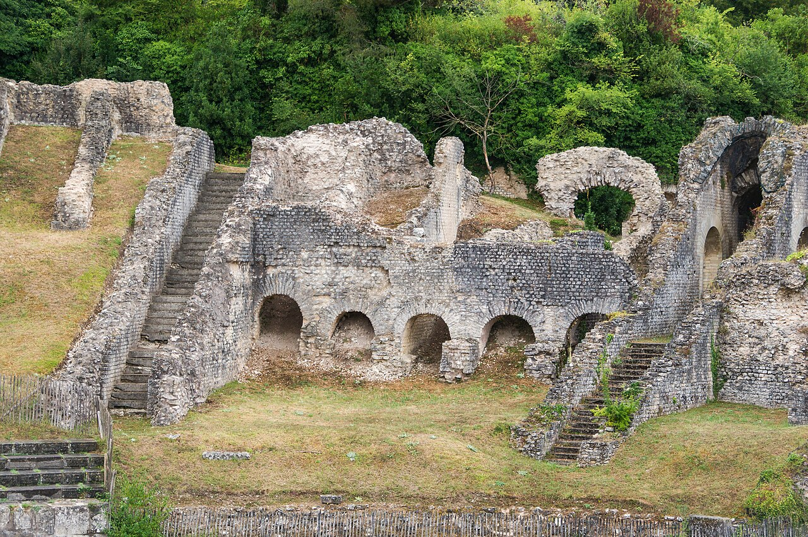

Le matin : partir de la rivière
Commencez par l’arc de Germanicus, sur la rive droite de la Charente. Regardez ses deux arches depuis les quais, puis traversez vers le centre ancien. Ce premier tour permet de prendre ses repères sans chercher à tout visiter. Gardez une pause pour profiter du bord de l’eau.
À midi : ralentir dans le centre ancien
Autour de la cathédrale Saint-Pierre, laissez une place aux ruelles et aux petites places. Pour déjeuner ou simplement boire un verre, regardez du côté de la place du Marché ou de la place du Synode : vous pourrez choisir selon vos envies et les menus du jour. En famille, une promenade courte suivie d’une vraie pause sera souvent plus agréable qu’un programme trop chargé.

Photo : Jebulon · Domaine public
L’après-midi : choisir son patrimoine
L’Abbaye aux Dames et l’amphithéâtre gallo-romain offrent deux façons d’aborder l’histoire de Saintes. Choisissez une visite principale plutôt que d’enchaîner les entrées. Consultez les modalités d’accès pour votre date, puis revenez tranquillement vers la Charente.
Une autre façon de découvrir la ville : depuis l’eau
Aux beaux jours, prolongez la balade sur la Charente : embarquez à bord de la gabare traditionnelle, choisissez une croisière sur le bateau électro-solaire Bernard Palissy III, ou prenez les commandes d’un petit bateau électrique sans permis. Les départs se font place Bassompierre. Les activités sont saisonnières et les horaires peuvent varier : pensez à consulter les disponibilités et à réserver auprès de l’office de tourisme.
Découvrir les balades en bateau sur la Charente ↗
Préparer une journée à son rythme
Repérez votre stationnement et les monuments que vous souhaitez visiter. Par temps de pluie, renseignez-vous sur les visites intérieures disponibles ; par beau temps, réservez davantage de place aux quais.
Avant de partir : quelques repères pratiques
Où se garer ? Pour rejoindre le centre historique, vous pouvez viser le parking Q-Park Saint-Pierre, place Saint-Pierre, pratique pour les ruelles et la cathédrale. Pour un stationnement gratuit, regardez les places de la place du 11-Novembre ou du square Goulebenèze ; vérifiez toujours la signalisation sur place.
Pause déjeuner. Les environs de la place du Marché et de la place du Synode sont de bons secteurs à explorer pour trouver une terrasse ou un restaurant au fil de votre promenade.
Balade sur l’eau. Les départs des activités nautiques se situent place Bassompierre. En période estivale, pensez à réserver et à vérifier les horaires avant de vous déplacer.
Prévoyez des chaussures confortables. Les monuments peuvent avoir des billets distincts. Vérifiez les accès si vous venez avec une poussette ou avez des besoins de mobilité.
Pour préparer votre sortie : Saintes Tourisme — Les incontournables ↗. Vérifiez les horaires et conditions sur le site officiel avant votre visite.